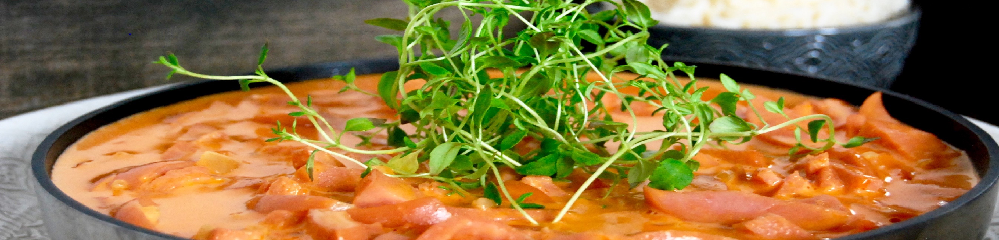

Object.assign(Recipe.prototype, { template(){ return `
      <div class="row">
        <div class="d-block w-100">
          
        </div>
      </div>

      <div class="container">
        <div class="row recipe-background">
          <div class="col-6">
            <h1 class="mt-3 recipe-header">Korv Stroganoff</h1><i class="fas fa-clock cook-time"></i>&nbsp;<a class="cook-time">45min</a>
          </div>
          
            <div class="col-6">
              <div class="dropdown show float-right mt-3">
                <a class="btn btn-secondary dropdown-toggle" href="#" role="button" id="dropdownMenuLink" data-toggle="dropdown" aria-haspopup="true" aria-expanded="false">
                  Antal personer
                </a>
              
                <div class="dropdown-menu" aria-labelledby="dropdownMenuLink">
                  <a class="dropdown-item" href="#">1</a>
                  <a class="dropdown-item" href="#">2</a>
                  <a class="dropdown-item" href="#">3</a>
                  <a class="dropdown-item" href="#">4</a>
                </div>
              </div>
            </div>
          </div>
        </div>
        
        <div class="container">
          <div class="row recipe-background">
            <div class="col-12 mt-3 mb-3">
              <span class="recipe-summary">Vardagsfavoriten korv Stroganoff har aldrig varit mer lättlagad. Perfekt måltid de dagar då vi har kort om tid.</span>
            </div>
          </div>
        </div>
      </div>

      <div class="container">
        <div class="row recipe-background">
          <div class="col-12 col-lg-3 mt-2">  
              <h4 class="sub-header">
                Ingredienser:
              </h4>
            <ul class="ingredient-control pl-1 mt-1">
              <li class="ingredient-layout pt-2">4 portioner ris</li>
              <li class="ingredient-layout">400 g strimlad falukorv</li>
              <li class="ingredient-layout">2 finhackade gula lökar</li>
              <li class="ingredient-layout">2 dl matlagningsgrädde</li>
              <li class="ingredient-layout">1 dl vatten</li>
              <li class="ingredient-layout">1 msk tomatpuré</li>
              <li class="ingredient-layout">1 msk kinesisk soja</li>
              <li class="ingredient-layout">Salt och peppar</li>
              <li class="ingredient-layout">1 msk olja till stekning</li>
            </ul>
          </div>
          <div class="cl-12 col-lg-8">
            <h4 class="mt-2 sub-header">
              Gör såhär:
            </h4>
            <ol class="recipe border-control">
              <li class="recipe-layout pt-2">Koka riset enligt anvisning på förpackningen.</li>
              <li class="recipe-layout">Fräs korven i oljan i en kastrull ca 5 minuter. Tillsätt lök och fräs ytterligare någon minut.</li>
              <li class="recipe-layout">Tillsätt grädde, vatten, tomatpuré och kinesisk soja. Koka ca 10 minuter. Red ev. av med vetemjöl eller maizenaredning.</li>
              <li class="recipe-layout">Smaka av med salt och peppar.</li>
              <li class="recipe-layout">Servera ris och vitkålssallad vid sidan om.</li>
            </ol>
          </div>
          <div class="container">
            <div class="row">
              <div class="col-12 col-lg-3 mt-2">  
                <h4 class="sub-header">
                  Näringsinnehåll:
                </h4>
                <ul class="ingredient-control pl-1 mt-1">
                  <li class="ingredient-layout pt-2"><span>Kolhydrater: </span><span>36.4g</span></li>
                  <li class="ingredient-layout"><span>Fett: </span><span>64g</span></li>
                </ul>
              </div>
            </div>
          </div>
        </div>
      </div>
`}});